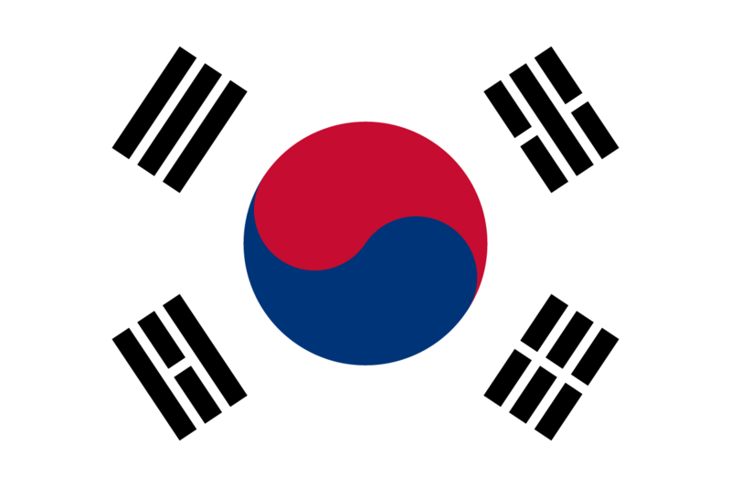
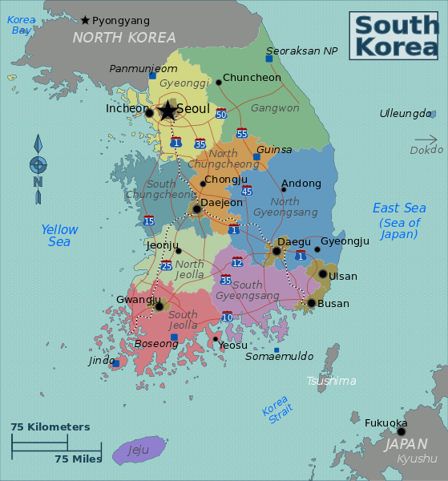
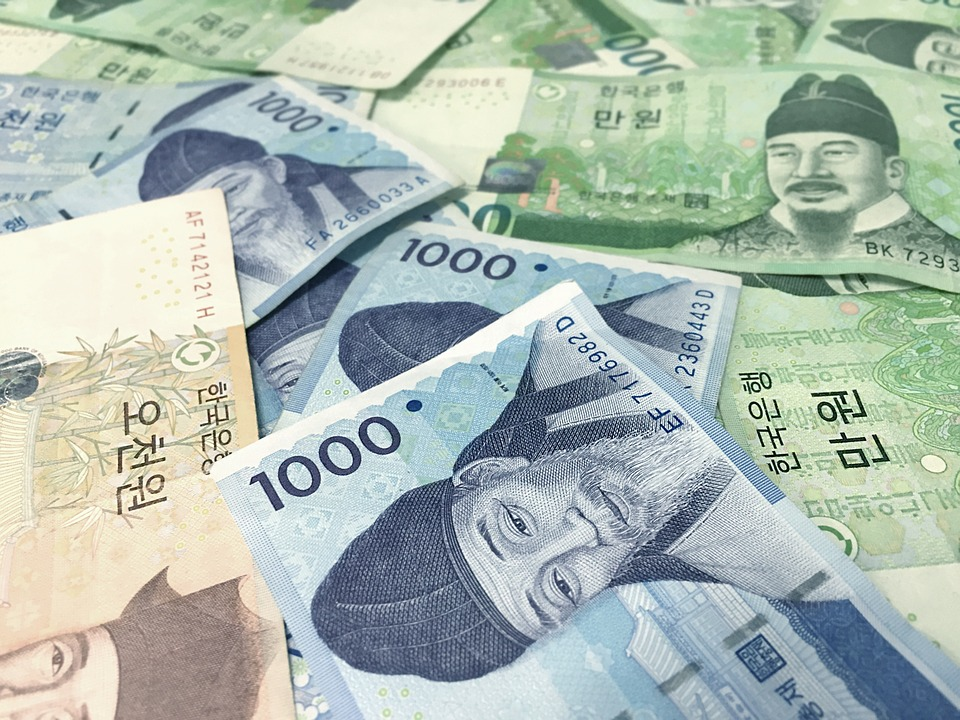

Introduction
When you think about South Korea, a lot of things may come to your mind. You might think about your favourite K-pop stars, such as IU, EXO, BTS, Blackpink and much more. You might think about the delicious and spicy food. Perhaps you might also be thinking about South Korea's relations with North Korea after viewing the media. Whatever else it may be, South Korea has a lot to offer you, so you definitely want to make the most of your trip!
Above is the national flag of South Korea, also known as "Taegeukgi". It consists of four trigams representing different elements of nature, a red and blue yang and yin, and white background representing purity and peace.
South Korea is, obviously located below North Korea, and is situated in the Far East, bordered by China and the Yellow Sea to the west, and the East Sea (Sea of Japan) and Japan to the east. South Korea has a population of around 51 million. Its capital city is Seoul, which has a population of around 10 million, making it one of the largest megacities in the world. Though the average traveller would probably spend the majority of the journey in Seoul, there are many are sights to see in other parts of the country, including in Busan, Kyongju, and one mustn't forget the volcanic island Jeju-do, at the very south of the country. It is a relatively small, but beautiful country with many things to do, see, taste, and try.

The national flower is the Rose of Sharon, also known as "Mugunghwa" in Korean.
The currency is the won. It consists of 50000, 10000, 5000 and 1000 won bills, as well as 500 and 100 won coins.
South Korea is a very culturally and linguistically homogeneous nation, with 96% of the population being of Korean descent, and 98% of the population claiming to speak Korean as a first language. English is regarded as a very important language, so virtually everyone under the age of 50 has learned English before. Virtually every high school also offers second foreign language courses, the most popular being Japanese, Mandarin Chinese and French. Despite this, knowing a bit of the Korean language will go a long way and make your journey a lot more pleasant, and English is not widely spoken outside the cities.
Though South Korea has gone through a complicated history, endured the tragedies of World War I and II, and the Korean War of the 1950s, South Korea evolved from becoming previously one of the least developed economies to one of the most developed economies in the world. Today, many people know South Korea for its high-tech industry and brands, including LG, Samsung, and the automobile company Hyundai. South Korea's quality of life is regarded as one of the best in the world. If you are planning to work in such industries, and you want to work overseas, South Korea is a great country to live in.
South Korea enjoys a deciduous forest climate and has four seasons; spring, summer, fall and winter. For those of you who want to experience your fair share of hot and cold or never seen snow before, South Korea is a great country to visit in all four seasons. Winters are very cold and snowy, and summers are often very hot and humid. For fans of hiking, spring and fall are amazing seasons to do such a sport.
Visit the rest of this website to find out more about what else there is to know!